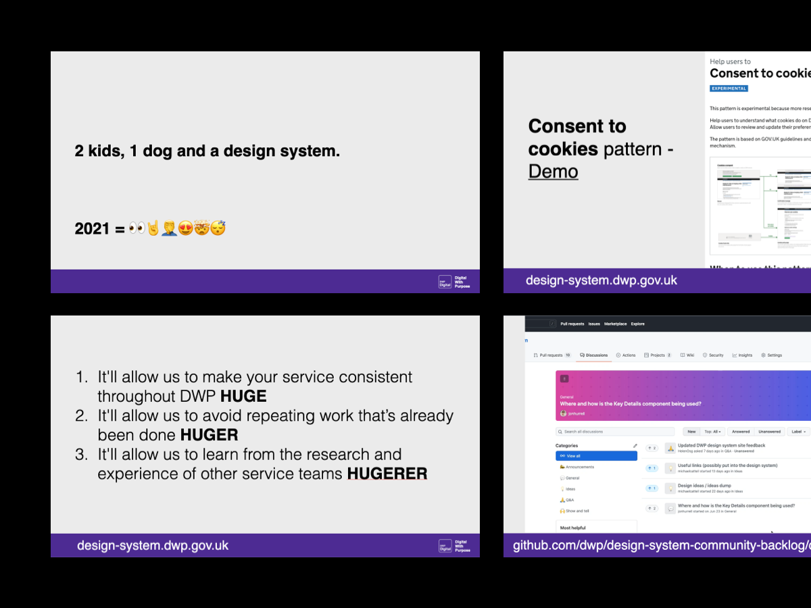

<article>
<section>
    <div class="wrapper">
        <div class="grid-full">

<h1 class="ralph">Discovery within DWP’s first design system</h1>

<div class="marginbottom--m"></div>

<div class="grid-full">
    
</div>
<div class="marginbottom--l"></div>


<div class="grid-full leftpusher10" style="max-width: 794px;">
<h3 class="emma">Introduction</h3>
    <p>DWP has scaled a lot since I was first here, back in 2014. Hiring designers of differing skills - interaction, content, user research, and with gov.uk getting 922 million visits per year - there is a great need to have services to be consistent and accessible for all.<br>
    This is where a design system comes in, treating this as a product that will provide a collection of tools, guidance and standards that can be used together to design and deliver services will shape us for a better and more accessible future whilst providing an ease and consistent use for our end users.
    </p>

    <h3 class="emma">The goal</h3>
    <p>The need for Design Systems goes hand in hand with the need for efficiency, consistency and scale of design.<br>
    Efficiency: Instead of repeatedly designing the same components/patterns, design systems enable reuse<br>
    Consistency: Components/patterns are designed and built with a shared set of principles and assurances<br>
    Scale: increased efficiency and consistency allow more service to be delivered faster.</p>

    <p><strong>In short:</strong> To make it easier for teams to find, use and share the patterns they need to design and build services
    <ul>
        <li>get buy-in from all levels and roles</li>
        <li>get a "thing" up and running</li>
        <li>get contribution model up and running</li>
    </ul>
</p>
    <p>We break this down into three handy segments:</br>
    <strong>+- educating / adoption / engagement -+</strong></p>
</div>
</div>
<div class="wrapper">
  <div class="grid-full">
    

    <h3 class="emma">What do we know?</h3>
    <p>- The design community have shared a library of patterns and code not covered by GOV.UK in different platforms over 3 years.<br>
    - The design has increasingly become more complex and involves more distributed, cross-functional disciplines. <br>
    - Users are not sure how to contribute to existing patterns or components<br>
    - We need to up the output to provide value and support</p> 

    <h3 class="emma">Outcome (KPIs)</h3>
    <p>Increase the usage of DWP patterns, traffic to the design system, contribution and engagement with new and existing backlog items, improvements on accessibility, performance and shared knowledge, code is activitly maintained - a lot more covering many differing roles and users!</p>
    <h3 class="emma">Hypothesis</h3>
    <p>By improving and implementing a design system, services will successfully be using the right and accessible pattern.</p>    
    
    <h3 class="font30"><strong>Where to start - Discovery?</strong></h3>
    <p>I joined as the teams first Interaction Designer, and my first task was to update the teams purpose, align current and future plans to user needs, and rearrange the backlog against delivery.<br>
    In this session, I wanted to know what are the users, what are their needs, what does their success look like.</p>

    <p>And the big one that I felt was going to be huge, get all the backlog out on the board and tidy it up, group it into similar themes, (we had a lot of duplications), I also challenged the team on what can we do to assist in getting more out of our community, things like tracking conversations to building trust and also do a little work around technology, what can we do that could be a quick win in removing tech debt around the website (for example).</p>
    <div class="marginbottom--m"></div>
    
    <div class="marginbottom--m"></div>
    <p>Upon completion of these, we dot voted and highlighted which ones were to be worked on next (this ranged from opinion, to feedback on the github issue, to people just asking for it) and finally highlight which ones we need to do user research on as opposed to a pattern we could put out as "experimental".</p>

    <p>Finally, the session ended with a system that I love doing,<br>
    Now, next and later.</p>

    <p>We take all the post its from the user needs (and successes) and the backlog and put them in a column to work on and decide the order.<br>
    In my experience this has helped so many teams gain buy-in internally as we can card sort all our future work-tickets in order.</p>

    <strong>Simple eh?</strong></p>

    <h3 class="font30"><strong>Next - community education</strong></h3>
    
    <p>Moving from the welfare dept of DWP to this team, I got invited to speak to the internal community (approx 100 people) and introduced the team, highlighting what we are working on, whats next and finally what challenges we faced and tried to be as transparent as possible, this allowed questions, ideas and instigated my DM's on slack to erupt!</p>
</div>
<div class="grid-full">
    <div class="marginbottom--m"></div>
    
    <div class="marginbottom--m"></div>
</div>
<div class="grid-full leftpusher10" style="max-width: 794px;">
    <p>One thing I did highlight was “the design system is not owned by us, we just put the jigsaw together, without the community a design system dies - I can push and push for feedback and solutions, but I need contrition to help us get somewhere in the future”. On that note I reminded the group what we are working is powered by focus groups, workshops and need, so we had items in our backlog on the cusp of being launched, we even had an item of ours going into GDS' pattern library (which is the end goal).</p>

    <h3 class="emma">Where we are now and what next for me</h3>
    <p>The Design system is a living thing, there is no end, if we do this right the service will forever live, but until that time I need to redefine how the contribution model works, I need to reinvent, reinvest and reignite (I made it to three words) my colleagues to feel the need to contribute and give back, but first we need to show value.</p>
    <p>I realised the lack of success within our current contribute model, it was not working and needed customising for us - with that in mind, I am running sessions that have united teams, services and locations to help us get talking freely - less about work and more about THE work, specific work that helps us all.<br>
    I also know there is always a need around showcasing the work we do, the design doesn’t automatically come with a value output, and always promoting and showing the purpose of the work we and I are doing is key and to do this means public speaking, workshopping and communiting openly and honestly.</p>

    <p>With the community vibe in mind, I decided to trial the following:<br>
    <strong>Office hours</strong> - where we share an hour of the week/month and explain what we did (i guess its similar to design community show and tell)<br>
<strong>Power hour</strong> - where we open a slack channel for drop-in calls, and discuss their patterns and talk openly (a show and tell for them, lead by them)<br>
<strong>Brown bag</strong> - we get folks who do not want high-level talk but a deep dive (optional attendance) into a pattern - bring your lunch!<br>
<strong>A survey</strong> - find out how to find how the design system is working for you.</p>

<p>It’ll be an interesting test to see which sinks or which come through as a shining light - plenty of work to do in this area but, all projects have challenges and all projects need the work, I’m just glad it’s this kind of work where I can control and have a lot of input in the outcomes (whilst trying new things and learning).</p>

<p><strong>This case study is not finished, and will not be for a while, but this is phase 1.</strong></p>

<p>All sounds simple eh? Anyone who worked on a design system knows it isn’t - I need to get the community to feel it’s part of their role, their need, and to find time to provide us with the solutions or problems - I also need to remember this is key in solving any contributing issues, many Systems in the past fall into the styleguide where it becomes one person leading the charge and making decisions - I see myself as the person who puts the jigsaw together, not the jigsaw maker.</p>

<h3 class="font30"><strong>What I learned so far</strong></h3>

<p>With every project, it needs a strategy, a purpose and I still feel design system’s arent crystal clear on this, so its around finding “what works for us and why are we doing it”, which I think we are clear on now.It is important to communicate wide, down and up to everyone to teach them the values of a design system, the biggest takeaway I could give anyone is let people know it’s a slow process, we strive for good patterns not just patterns. It’s quality over quanity.</p>

<p>Finally, work on your contribution model, in a pinch it can become more powerful than discussions, using a well made visual has saved me a ton when words fail me due to presentation-fatigue or just overexplaining.<br>
It can also be the difference between getting funding and support to “doing it yourself”, and I can not think of a recipe for failure more than that being a system.</p>


</div>

<div class="marginbottom--xl"></div>

<div class="grid-full col">
  <div class="CrossPageNavigation">
    <div class="grid-full">
      <div class="CrossPageNavigationPrevious">
        <strong>Go to the next case study</strong><br />
          <a href="russellhobbs-2020.html">Russell Hobbs</a>
      </div>
    </div>
  </div>
</div>

</div>
</div>
</section>
</article>